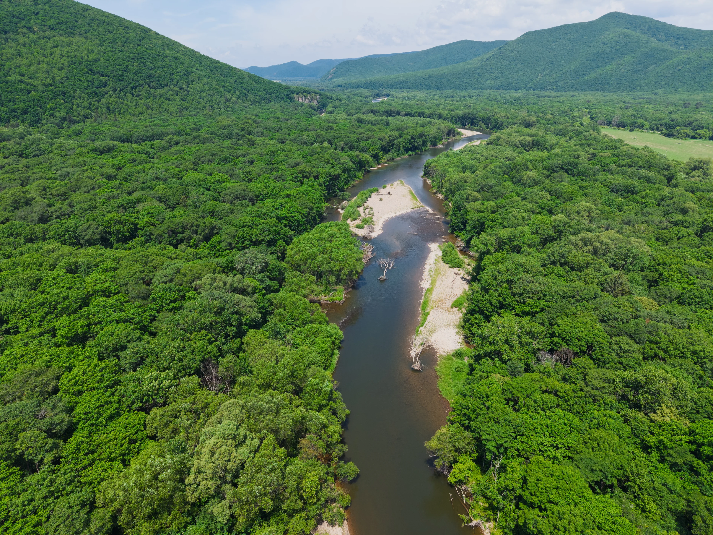

Species diversity
Integrative taxonomy using morphology, specimens and molecular evidence.

Field-based research across Eurasian river systems.
I study freshwater fish diversity, evolutionary history and biogeography, combining field collections, morphology, molecular data and geography.
Phoxinus is the main comparative system, with additional work on other Eurasian freshwater fishes.
Integrative taxonomy using morphology, specimens and molecular evidence.
Geographic structure of lineages in relation to drainage history and isolation.
Comparing morphology and genetic patterns among populations and regions.

Broad geographic material allows local taxonomic questions to be examined in a wider biogeographic context.
Field collections provide the specimens, tissue samples, live-colour images and geographic context used in the research.
MorphoLabel is being developed to speed up annotation and review of fish morphology, beginning with landmark-based workflows.
Ichthyologist · Senior Research Scientist
Papanin Institute for Biology of Inland Waters, Russian Academy of Sciences. Research interests: freshwater fish diversity, taxonomy, phylogeography and biogeography.


{kind=link}